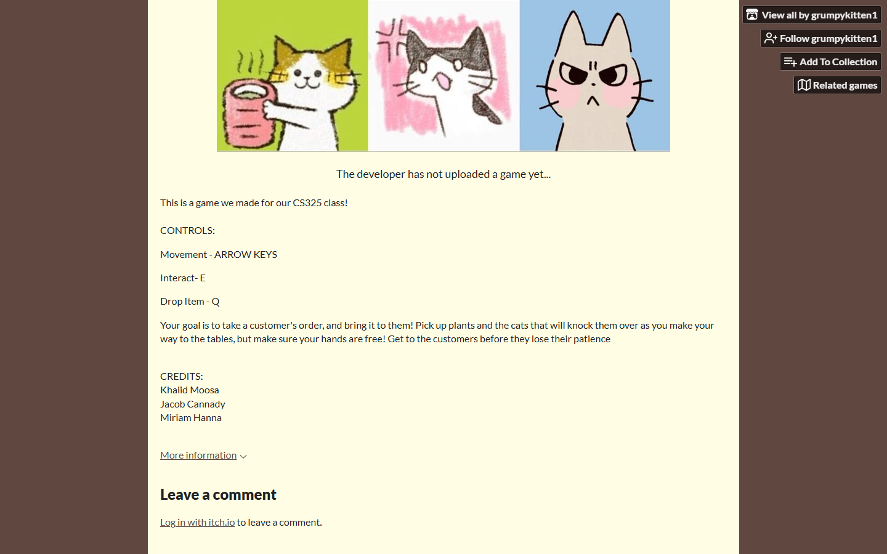

Catfe au Lait
UNITY · C#

NOTES
Diner Dash, but you are a barista in a cat cafe. Final project for CS325, built in Unity with C#.
Order queues, timers, and a lot of tuning to find the line where it is stressful enough to be fun but not so stressful that you quit.